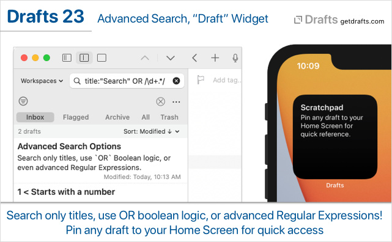
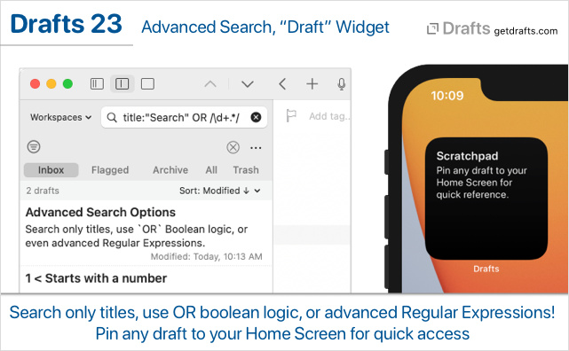

Drafts 23 has been released:

Details below. For a complete history of updates, visit:

Details below. For a complete history of updates, visit:
“Draft” widget type to display the content of a specific draft. This is in addition to Grid and List widget types released in the previous update. After adding the widget, edit options to select draft and display options. Tapping the widget opens the selected draft. Useful for keeping a scratchpad draft, or similar. More on Widgets.
Drafts searches support powerful new query options. These options apply to anywhere drafts are searched, including the draft list, workspaces quick search, and scripted queries:
-blue.title: and tag: prefixes to force a query to only look for a term in draft titles or tags. May be combined with exact phrase searching, so title:"My Draft" will look for only drafts with the string “My Draft” in the first line.AND and OR operator support. AND is not needed, as it is assumed as the operator at any space between terms. Examples:blue OR green would find any drafts with either “blue” or “green” in the text.blue red OR green would find drafts with both “blue” and “red” or only “green”./term/). Examples (not necessarily useful ones):
/.*ABC.*/ would find any drafts with “ABC” in the text./\d+/ would find any drafts that start with a number./.*\[\[.*\]\].*/ would find drafts with [[wiki-style]] linksMore details on available search options can be found in the User Guide.
[[display_title]] and [[body_preview]] template tags. These match the trimmed display versions of the title and body displayed in the draft list. Template tag reference./open URL with title parameter finds more than one matching draft, the resulting search now opens with title:"value" search to limit results to only matching titles.draft.bodyPreview(maxLength: Int) function. Returns trimmed body preview similar to what is used in the draft list, removing first line and trimming whitespace and truncating to the requested length.app.showDraftList() called with a pinned draft list on iPad could result in greyed out editor.Drafts searches support powerful new query options. These options apply to anywhere drafts are searched, including the draft list, workspaces quick search, and scripted queries:
-blue.title: and tag: prefixes to force a query to only look for a term in draft titles or tags. May be combined with exact phrase searching, so title:"My Draft" will look for only drafts with the string “My Draft” in the first line.AND and OR operator support. AND is not needed, as it is assumed as the operator at any space between terms. Examples:blue OR green would find any drafts with either “blue” or “green” in the text.blue red OR green would find drafts with both “blue” and “red” or only “green”./term/). Examples (not necessarily useful ones):
/.*ABC.*/ would find any drafts with “ABC” in the text./\d+/ would find any drafts that start with a number./.*\[\[.*\]\].*/ would find drafts with [[wiki-style]] linksMore details on available search options can be found in the User Guide.
[[display_title]] and [[body_preview]] template tags. These match the trimmed display versions of the title and body displayed in the draft list. Template tag reference./open URL with title parameter finds more than one matching draft, the resulting search now opens with title:"value" search to limit results to only matching titles.draft.bodyPreview(maxLength: Int) function. Returns trimmed body preview similar to what is used in the draft list, removing first line and trimming whitespace and truncating to the requested length.app.queueAction might not display.